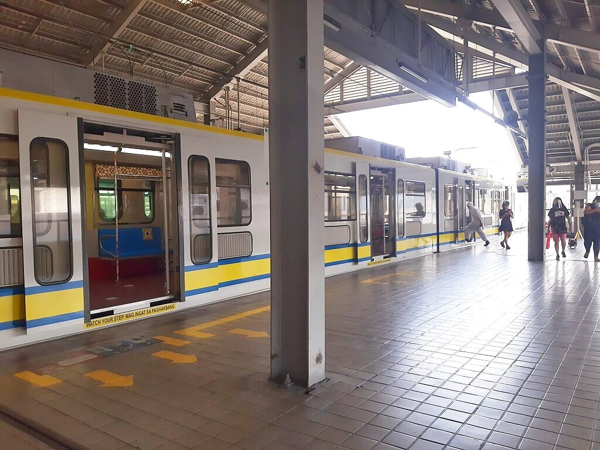
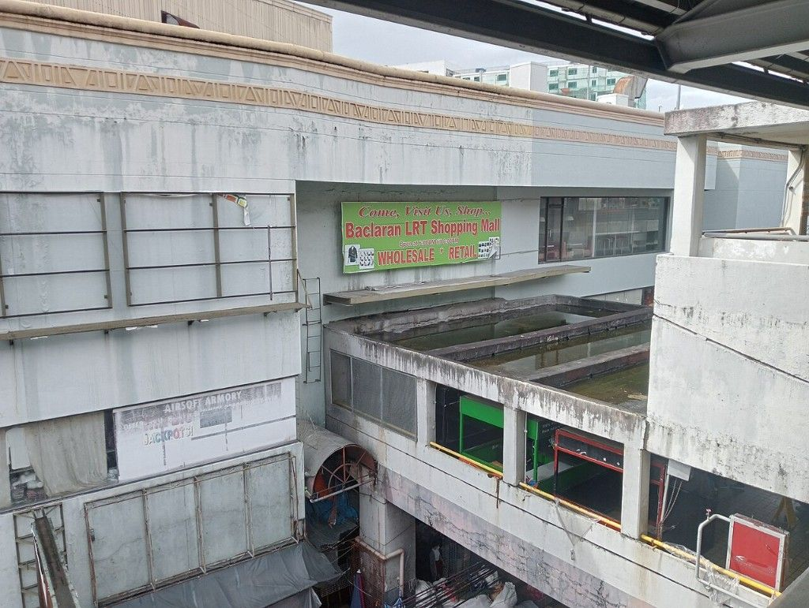
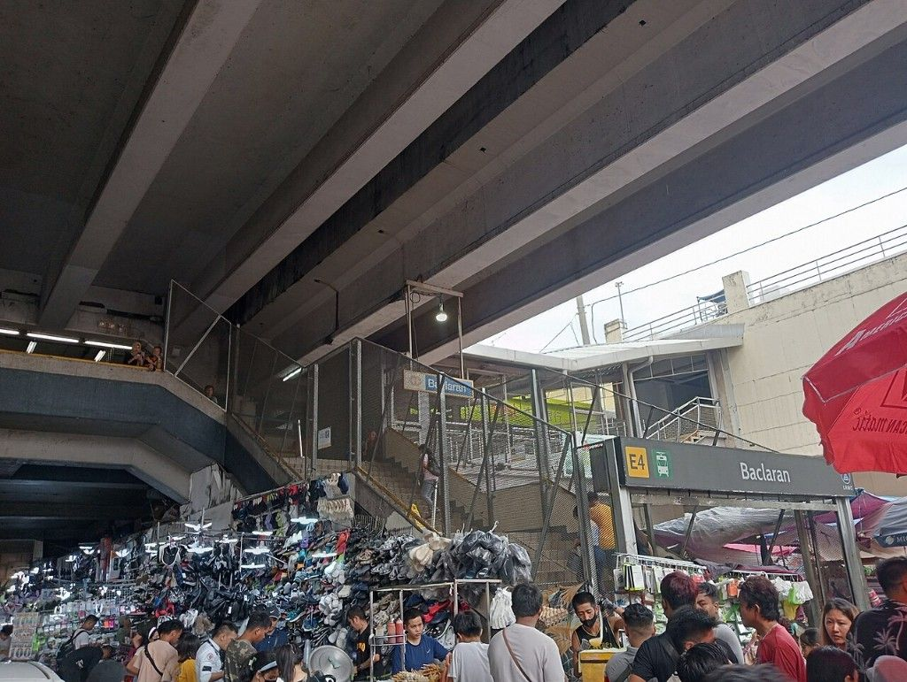

Baclaran
LRT-1 station
Baclaran station is an elevated Light Rail Transit (LRT) station located on the LRT Line 1 (LRT-1) system in Pasay. Situated on the last stretches of Taft Avenue right at the border with Baclaran, Parañaque. The station is named after the famous shopping district of the same name, which is located on the borders of the cities of Pasay and Parañaque. Opened in 1984, the station served as the line's initial southern terminus, historically known as South Terminal, until Phase 1 of the Cavite Extension was opened in November 16, 2024.
The station is the 6th station for trains headed to Fernando Poe Jr. and the 20th station for trains headed to Dr. Santos. Baclaran is one of the four LRT-1 stations serving Pasay City; the others are Gil Puyat, Libertad, and EDSA. The line's depot is located near the station.
The terminal is near one of the country's most famous landmarks, the National Shrine of Our Mother of Perpetual Help, widely known as the Baclaran Church. It is also near numerous dry goods and flea markets (tiangges), selling everything from clothes and electronics to home decorations and traditional medicine. It is also interconnected to adjacent shopping malls such as MyMall and Baclaran LRT Shopping Mall.
The station is the 6th station for trains headed to Fernando Poe Jr. and the 20th station for trains headed to Dr. Santos. Baclaran is one of the four LRT-1 stations serving Pasay City; the others are Gil Puyat, Libertad, and EDSA. The line's depot is located near the station.
The terminal is near one of the country's most famous landmarks, the National Shrine of Our Mother of Perpetual Help, widely known as the Baclaran Church. It is also near numerous dry goods and flea markets (tiangges), selling everything from clothes and electronics to home decorations and traditional medicine. It is also interconnected to adjacent shopping malls such as MyMall and Baclaran LRT Shopping Mall.
| Baclaran | |||||||
|---|---|---|---|---|---|---|---|
|  | |||||||
| General information | |||||||
| Location | Taft Avenue Extension, Santo Niño, Pasay, Metro Manila, Philippines | ||||||
| Owned by |
|
||||||
| Operated by | Light Rail Manila Corporation | ||||||
| Line(s) | LRT Line 1 | ||||||
| Platforms | 2 (1 side, 1 island) | ||||||
| Tracks | 3 | ||||||
| Connections | None | ||||||
| Construction | |||||||
| Structure type | Elevated | ||||||
| Parking | No | ||||||
| Bicycle facilities | Yes | ||||||
| Accessible |
Concourse: All entrances
Platforms: All platforms |
||||||
| Other information | |||||||
| Status | Operational | ||||||
| Station code | BA | ||||||
| History | |||||||
| Opened | December 1, 1984 | ||||||
| Southern terminus | December 1, 1984 – November 15, 2024 | ||||||
| Services | |||||||
|
|||||||
| Location | |||||||
Baclaran station is a major transportation hub, with many buses and jeepneys terminating here. Buses coming from the terminal usually head to points south of Manila and the province of Cavite. Jeepneys that stop here usually go to various destinations in Metro Manila (Las Piñas, Parañaque, and Muntinlupa to the south; Manila, Pasay, Quezon, and Caloocan to the north) and the province of Cavite. Taxis also ply for hire near the station, with dedicated taxis available for passengers heading to Ninoy Aquino International Airport, which is only about 2 kilometers from the station. Cycle rickshaws or pedicabs and tricycles can also be used to navigate the interior streets of Baclaran and Santo Niño in Pasay from the station.
- A fire blazed at a shopping mall in Baclaran around 5:00 AM January 3, 2008. Windy weather fanned the flames and brought smoke to the Baclaran terminal up to the next station at EDSA.
- On August 11, 2008, a fire blazed in a mall near the Baclaran station. The station closed to the public until the station was reopened on August 13.
- On April 13, 2023, a malfunction occurred at the station, causing LRT Line 1 to go on limited operations from Gil Puyat to Roosevelt beginning at 1:40 PM.

Station's link with Baclaran LRT Shopping Mall

Entrance
| Operational | |
|---|---|
|
Dr. Santos
Ninoy Aquino Asia World MIA Redemptorist Baclaran EDSA Libertad Gil Puyat Vito Cruz Quirino Pedro Gil |
United Nations
Central Carriedo Doroteo Jose Bambang Tayuman Blumentritt Abad Santos R. Papa 5th Avenue Monumento Balintawak |
| Fernando Poe Jr. | |
| Under construction | |
|
Las Piñas
Zapote |
Niog
North Triangle |